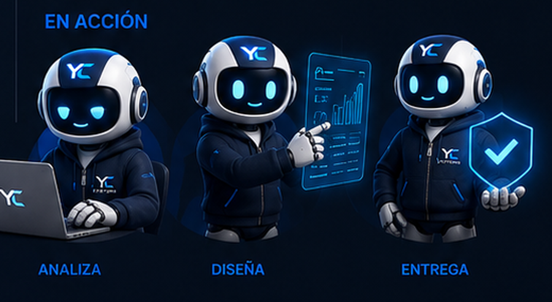

Software Products & Business Systems
Construimos productos de software que ayudan a las empresas a operar, crecer y escalar.
Desarrollamos productos SaaS, plataformas operativas y soluciones digitales que ayudan a empresas a crecer, vender mejor y operar con mas control.
CleanLoop
SOC
BrokerControl
Digital Brands
YC Systems in Numbers
4 Products. 5 Live Websites. 1 Technology Company.
YC Systems ya se presenta como una empresa tecnologica con productos propios, sitios activos, presencia publica y capacidad de ejecucion para clientes e inversionistas.
Conoce a Nexus
Nexus es parte del ADN visual de YC Systems.
Nexus representa nuestra forma de construir: analizar, disenar, automatizar y entregar productos digitales que ayudan a empresas reales a operar mejor.
Analyze
Design
Build
Deliver
Ver productos

Identidad YC Systems
Un sistema visual propio: logo, Nexus, productos y una historia real.
La marca combina azul electrico, azul profundo, blanco, gris y acentos de accion para verse tecnologica, seria y reconocible. Nexus ayuda a explicar el proceso; los productos y sitios reales prueban la ejecucion.
#2563EB
#0F172A
#00D8FF
#5CFF5C
YC Systems no es solo una pagina de servicios. Es una empresa tecnologica en construccion, con productos propios, proyectos de clientes reales y una identidad nacida de trabajo, vision y familia.
La N tiene un significado especial: Nancy, origen emocional de esta vision y parte de la historia de la marca.Products
Productos de software con mercados claros.
Cada producto resuelve una operacion distinta y abre una oportunidad comercial diferente.


CleanLoop
Laundry Operations Platform para lavanderias, drivers, clientes, tracking, pagos y flujo SaaS.

Sales Operations Center
Centro operativo para ventas inmobiliarias, reservas, separaciones, legal, reportes y visibilidad ejecutiva.


BrokerControl
CRM inmobiliario para pipeline, cliente 360, documentos, comisiones, agenda y reportes comerciales.

CreditPilot
Plataforma en desarrollo para credit repair, clientes, casos, documentos, cartas y portal.
Client Projects
Casos de cliente en una vista clara.
Sitios reales que muestran e-commerce, servicios, marca corporativa, presencia profesional y dominios activos.

GhostWear
Live e-commerceghostwear1.com
Tienda streetwear con catalogo, productos, carrito y pedido por WhatsApp.
Ver sitio activo
Antony Real Estate
Asesor inmobiliarioantonyrealestate.com
Web profesional para asesorar compradores que quieren adquirir propiedad en Republica Dominicana.
Ver sitio activo
LPS Company
Corporate weblps-company.com
Base corporativa para una empresa con marcas, servicios y presencia digital.
Ver sitio activo
LucianoWash
Service websitelucianowash.lps-company.com
Web de servicios de limpieza con imagen profesional, WhatsApp y experiencia movil.
Ver sitio activo
Snackeria
Convenience brandsnackeriado.lps-company.com
Presencia digital para soluciones de conveniencia y servicios empresariales.
Ver sitio activoSoluciones por nivel
Empieza pequeno, pero con una base lista para crecer.
Una pagina web, una tienda o un portal no se cotizan igual. YC Systems organiza cada proyecto por fases para que el cliente compre claridad, no improvisacion.
Ideal para asesores, marcas personales, servicios, empresas locales y negocios que necesitan verse serios.
- Dominio y estructura clara
- Contacto directo
- Movil y SEO basico
Para marcas que necesitan catalogo visual, carrito, pedidos por WhatsApp o flujo e-commerce.
- Productos y categorias
- Pedido simple
- Experiencia movil
Para negocios que manejan clientes, tareas, incidencias, documentos, reservas o reportes.
- Login y roles
- Panel administrativo
- Reportes y evidencias
Perfecto para empresas que quieren acceso privado, seguimiento, documentos y procesos por modulo.
- Acceso clientes
- Modulos por fase
- Base lista para crecer
Cambios, contenido, mejoras, idioma, soporte y nuevas pantallas cuando el negocio crece.
- Actualizaciones
- Mejoras continuas
- Acompanamiento mensual
Referencia comercial:
Los sitios profesionales se trabajan por alcance. Los sistemas, portales y SaaS se cotizan por modulos, fases y nivel de automatizacion.
Solicitar orientacion
About YC Systems
Mission, vision and values built around software products.
YC Systems convierte problemas operativos en productos digitales claros, utiles y escalables.
Ver sobre YC SystemsContacto
Hablemos de tu proxima pagina, aplicacion, sistema o plataforma.
Canales actuales para proyectos: email, Instagram, Facebook, GitHub publico y portafolio de soluciones construidas por YC Systems.